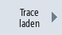
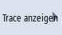
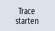
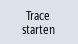

Sie haben die Möglichkeit, bereits gespeicherte Sitzungsdateien zu laden, um sie neu zu starten oder sich die Trace-Aufzeichnung anzeigen zu lassen.
Einstellungen | Bedeutung |
|---|
Variablen, Einstellungen | Sie können eine bereits angelegte Trace-Sitzung neu starten. |
Variablen, Einstellungen und aufgezeichnete Werte | Sie können sich das Ergebnis einer Trace-Sitzung anschauen, Variable ändern und ggf. neu starten. |
Voraussetzung
Es ist eine Sitzungsdatei von Trace-Aufzeichnungen vorhanden.
Vorgehensweise
| | 1. | Sie haben die Funktion "Trace" angewählt. |
|  | 2. | Drücken Sie den Softkey "Trace laden". Das Fenster "Sitzungsdatei laden: bitte Datei auswählen" öffnet sich. |
|  | 3. | Wählen Sie die gewünschte Sitzungsdatei aus dem entsprechenden Verzeichnis, z. B. "Trace" und drücken Sie den Softkey "Trace anzeigen". Das Fenster "Trace laden: Session..." wird geöffnet. |
| | 4. | Markieren Sie das Kontrollkästchen "Variablen, Einstellungen", wenn Sie die Trace-Sitzung gleich starten. |
   | 5. | Drücken Sie den Softkey "OK" und den Softkey "Trace starten", um die Aufzeichnung erneut zu starten. |
| | | - ODER - |
| | | Markieren Sie das Kontrollkästchen "Variablen, Einstellungen und aufgezeichnete Werte", wenn Sie sich die Trace-Sitzung anzeigen lassen. |
| | | Drücken Sie den Softkey "OK". Die Daten der gewählten Sitzung werden geladen und im Fenster "Trace" angezeigt. |